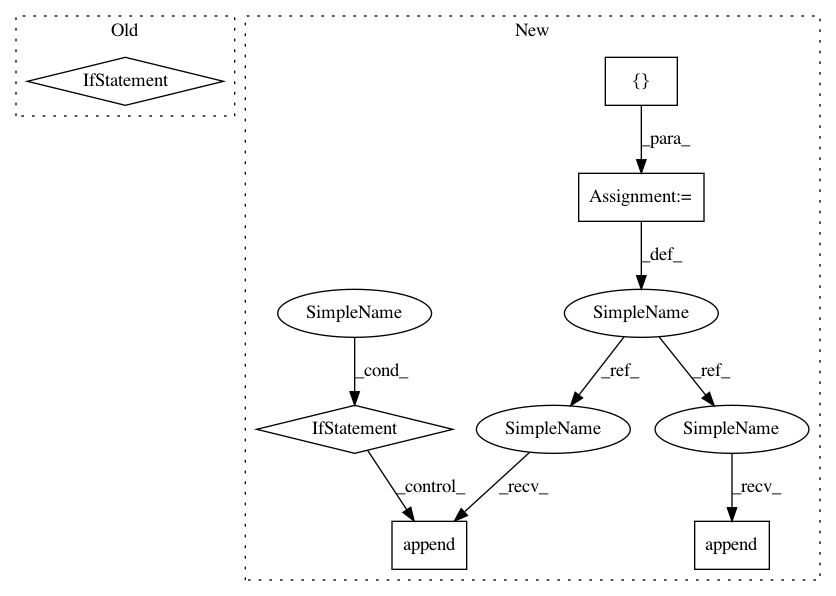

2ccceaf73c447a99d37ad64b2b7999383ccebbd0,softlearning/policies/gaussian_policy.py,GaussianPolicy,actions_for,#GaussianPolicy#Any#Any#Any#Any#Any#,51
Before Change
log_pis = self._log_pis_for_raw(observations, raw_actions,
name)
if with_raw_actions:
return actions, log_pis, raw_actions
return actions, log_pis
return actions
After Change
)
raw_actions = distribution.x_t
actions = tf.tanh(raw_actions) if self._squash else raw_actions
return_list = [actions]
// TODO: should always return same shape out
// Figure out how to make the interface for `log_pis` cleaner
if with_log_pis:
log_pis = self._log_pis_for_raw(observations, raw_actions,
name)
return_list.append(log_pis)
if with_raw_actions:
return_list.append(raw_actions)
// not sure the best way of returning variable outputs
if len(return_list) > 1:
return return_list
return actions
In pattern: SUPERPATTERN
Frequency: 4
Non-data size: 6
Instances
Project Name: rail-berkeley/softlearning
Commit Name: 2ccceaf73c447a99d37ad64b2b7999383ccebbd0
Time: 2018-07-04
Author: azhou42@berkeley.edu
File Name: softlearning/policies/gaussian_policy.py
Class Name: GaussianPolicy
Method Name: actions_for
Project Name: apple/coremltools
Commit Name: 523d5e03d86c26267ee6bdf17dd20f6ce6bdadd7
Time: 2020-10-10
Author: aseem.elec@gmail.com
File Name: coremltools/converters/mil/mil/ops/defs/tensor_operation.py
Class Name: concat
Method Name: value_inference
Project Name: rail-berkeley/softlearning
Commit Name: 0b47129713e8cd63c49a0c53202f2b3deac941cc
Time: 2018-07-09
Author: azhou42@berkeley.edu
File Name: softlearning/policies/latent_space_policy.py
Class Name: LatentSpacePolicy
Method Name: actions_for
Project Name: apple/coremltools
Commit Name: 169159b9cc03d1c5acb4a34d1aad2d8abafd0cf1
Time: 2019-07-11
Author: aseem.elec@gmail.com
File Name: coremltools/models/neural_network/builder.py
Class Name: NeuralNetworkBuilder
Method Name: add_optionals